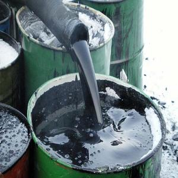
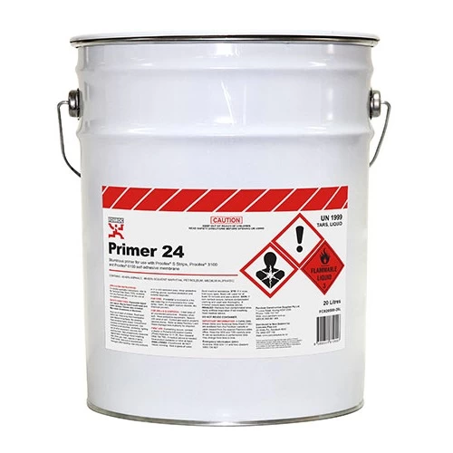
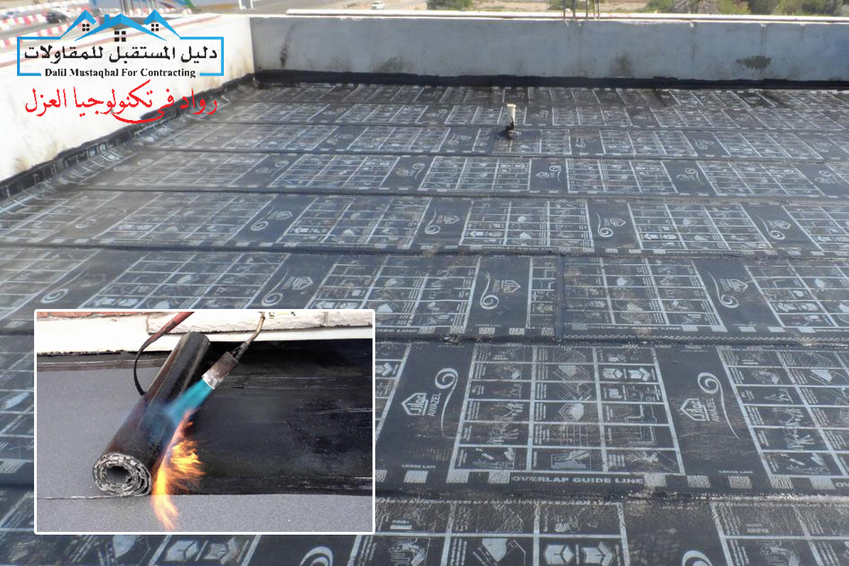

-
التركيب:
مادة هيدروكربونية ذات لزوجة عالية. تُستخرج عادة من التكرير الثقيل للنفط الخام.
-
الاستخدامات:
- الطرق: يستخدم كمادة رابطة في بناء الطرق.
- العزل: يُستخدم في عزل الأسطح لمنع تسرب المياه.
- البناء: يدخل في بعض مواد البناء كعازل صوتي وحراري.
-
أنواع البيتومين:
- البيتومين المؤكسد: يتم إنتاجه عن طريق نفخ الهواء في البيتومين الساخن.
- البيتومين السائل: يستخدم في تطبيقات الطلاء والعزل.
- البيتومين الصلب: يُستخدم في أغراض البناء.
-
المميزات:
- مقاوم للعوامل الجوية مثل المطر والحرارة.
- يمتلك خصائص لاصقة ممتازة.
-
التحديات البيئية:
إنتاج البيتومين يساهم في انبعاثات الكربون. ويتطلب التخلص منه أو إعادة تدويره بطرق خاصة.


مادة كيميائية تُستخدم لتحضير الأسطح (مثل المعدن، الخشب، الخرسانة) قبل الطلاء. تساعد على تحسين التصاق الطلاء وتقليل تأثير العوامل البيئية على السطح. مادة قابلة للاشتعال. يجب استخدامه في مكان جيد التهوية وتجنب ملامسته للجلد والعين.

عملية تهدف إلى حماية الأسطح من تسرب المياه والرطوبة، مما يمنع تلف الخرسانة والبنية التحتية. ضرورة تطبيق العزل بواسطة فنيين متخصصين. تكلفة العزل قد تكون مرتفعة لكنها استثمار طويل الأجل.